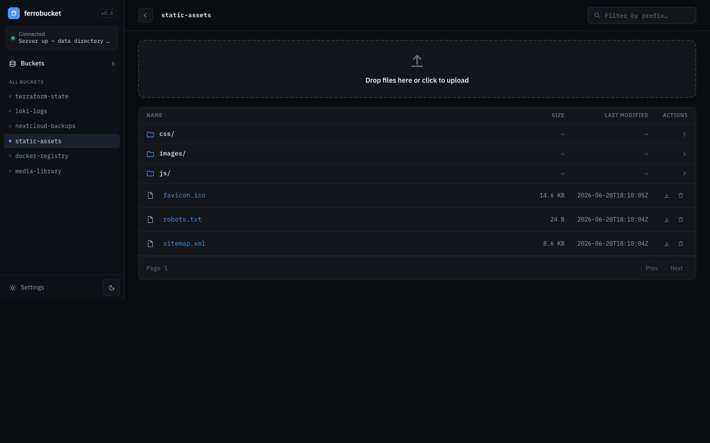

ferrobucket is a lightweight, self-hosted S3-compatible object storage server with a built-in web UI. Drag-drop multipart uploads, presigned links, prefix navigation — from one static Rust binary that idles around 2 MB of RAM, with credentials that never touch the browser.
docker run -p 9000:9000 -v "$PWD/data:/data" ferrobucket --anonymous
docker build -t ferrobucket . — see Install.
--anonymous for local use). Signing happens on the server — keys never reach the browser.scratch Docker image that idles around 2 MB of RAM. No database, no sidecars.docker build — one multi-stage build produces a static binary on a scratch image. (A published image is on the way.)/data for persistence and expose port 9000. Pass keys via env, or --anonymous for local use.--endpoint-url on the aws CLI (or any S3 SDK), and open the web UI at /ui.# build the image (static binary + embedded UI) $ git clone https://github.com/litvancom/ferrobucket $ cd ferrobucket $ docker build -t ferrobucket . # run it — objects persist in ./data $ docker run -p 9000:9000 -v "$PWD/data:/data" \ ferrobucket --anonymous # S3 API + web UI → http://127.0.0.1:9000 (UI at /ui) # point any S3 client at it (path-style) $ aws --endpoint-url http://127.0.0.1:9000 s3 ls
Free forever, MIT licensed. Star the repo, file an issue, send a PR — it's all out in the open.